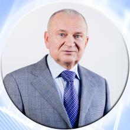

Склад кафедри
Луговой Анатолій Васильович
Професор, к.т.н., заслужений працівник освіти України, кавалер ордена «За заслуги» ІІІ ступеня.
Освіта: Закінчив електромеханічний факультет Криворізького гірничорудного інституту у 1962 році. У 1969 році захистив дисертацію на отримання наукового ступеню кандидата технічних наук в Московському енергетичному інституті. Доцент з 1971 року, професор з 2011 року. Працює на кафедрі з 2000 року.
Основні етапи педагогічної та наукової діяльності у вищих закладах освіти ІІІ–ІV рівня акредитації.
1. З 1985 року по 2000 рік завідувач кафедри систем автоматичного управління та електроприводу;
2. З 1993 по 2012 рік проректор з наукової роботи, економіки та міжнародних зв’язків КрНУ ім. Михайла Остроградського;
3. З 2000 року по 2018 рік завідувач кафедри комп’ютерних та інформаційних систем.
Лауреат загальноукраїнського рейтингу професійних досягнень "Лідер України", за особистий внесок в розвиток освіти і науки України рішенням Науково-експертної ради іміджевої програми "Лідер ХХІ століття" нагороджений нагрудним знаком "Лідер України", нагороджений почесними грамотами обласної державної та міської адміністрації за значний особистий вклад у розвиток науки, плідну науково-педагогічну роботу, активну громадську діяльність. Крім своїх основних обов`язків веде громадську роботу - очолює Кременчуцький осередок Полтавської філії північно-східного центру НАН України, є членом Європейської асоціації міжнародної освіти (European association for international Education), головою регіонального відділення Української асоціації інженерів-електриків, головою правління громадської організації "Бізнес - Інкубатор - Кременчук".
Наукові та методичні публікації: За період роботи опубліковано близько 200 наукових праць і отримано 8 патентів. Протягом 1980–2015 років був керівником більше 50 госпдоговірних та бюджетних науково-дослідних робіт різних напрямків, результати яких були впроваджені на багатьох підприємствах країни.
Дисципліни: «Дослідження та проектування комп’ютерних систем та мереж», «Мережні інформаційні технології», «Методологія та організація наукових досліджень», «Патентознавство та авторське право».
Коло наукових інтересів: архітектура комп’ютерних мереж та технології передачі даних, теорія підготовки та прийняття рішень, інтелектуальні системи.
Видавнича діяльність:
підготовлено і видано в співавторстві підручник для студентів вищих навчальних закладів «Моделювання електромеханічних систем», 2001 рік, 30 друкованих аркушів;
підготовлено і видано в співавторстві навчальний посібник, рекомендований Міністерством освіти та науки України для студентів вищих навчальних закладів: «Численные методы решения задач на персональных компьютерах», 2002 рік, 31 друкований аркуш;
підготовлено і видано в співавторстві навчальний посібник, рекомендований Міністерством освіти та науки України для студентів вищих навчальних закладів: «Микропроцессоры: архитектура и принципы функционирования», 2002 рік, 31.75 друкованого аркуша;
підготовлено і видано в співавторстві навчальний посібник, рекомендований Міністерством освіти та науки України для студентів вищих навчальних закладів: «С++: решение инженерных задач», 2005 рік, 21 друкований аркуш;
підготовлено і видано в співавторстві монографію «Інформаційна стійкість комп’ютерних технологій та мереж», 2015 рік, 20 друкованих аркушів.
Наукова і науково-педагогічна співпраця:
з Київським політехнічним інститутом, Національним авіаційним університетом, Тернопільським економічним університетом.
Підготовка наукових кадрів: Підготував 3 кандидатів наук з питань дослідження і вдосконалення електромеханічних систем і систем автоматичного керування.
Email:
anatoliyvlug@gmail.com